**Assignment 2 Report**
Student name: Siheng Li (sihengl)
(##) About this template
* Structure your report using numbers and titles following those of the assignment.
* For every task include all images you generated. dirt will generate both an `.hdr` and an sRGB tonemapped `.png` image of your rendering. Use the `.png` in the comparisons in your report.
* For tasks where we provide a reference image, include a comparison of your output to the reference (see examples of this below)
* Include descriptions of encountered problems, a list of external libraries that you used (if applicable) and the time you spent on each task.
For an overview of Markdeep and its syntax, see the [official demo document](https://casual-effects.com/markdeep/features.md.html) and
the associated [source code](https://casual-effects.com/markdeep/features.md.html?noformat).
(##) Feedback
I think Beckmann eval can definitely use a rework to be clearer.
I was confused on Halton and stratified sampling because of how the methods
were divided up. It would also be helpful to know which images should match reference exactly.
(##) Task 1: Sampling Distributions
Uniform Points on a Spheres:
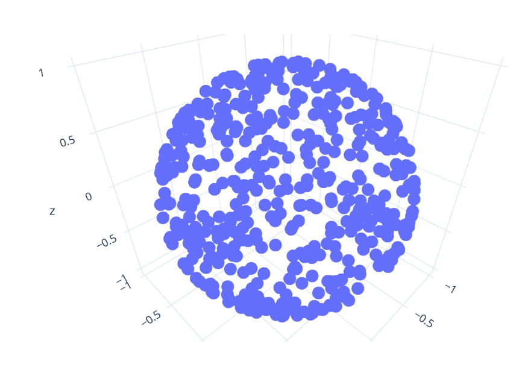
Uniform Points on a Hemisphere:
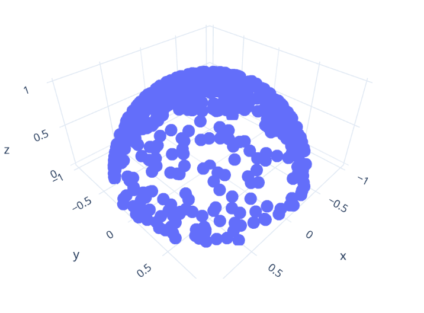
Cosine-weighted Points on the Hemisphere
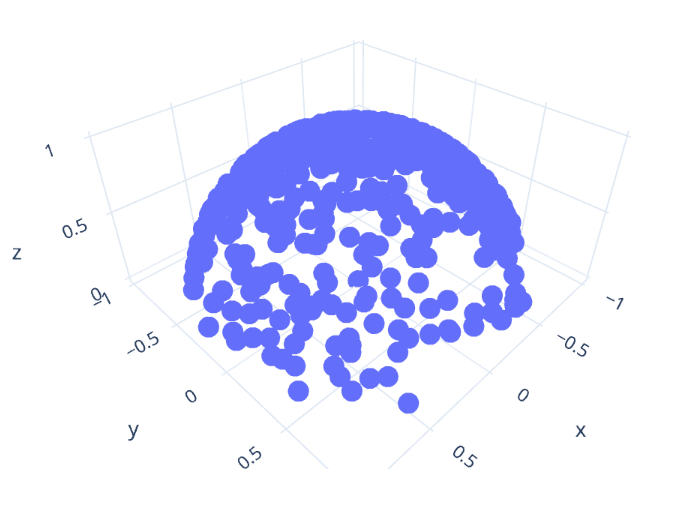
Cosine-power-weighted Points on the Hemisphere
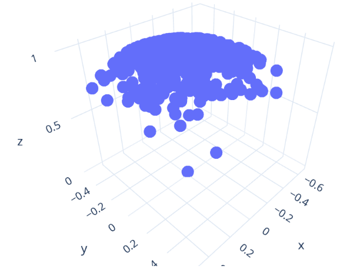
(##) Task 2: Sampling Materials
Lambertian PDF
Lambertian Sampled
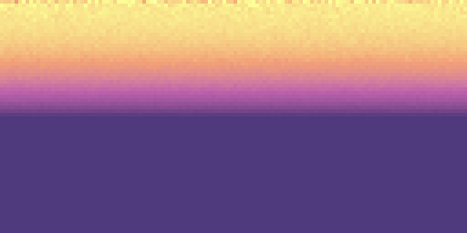
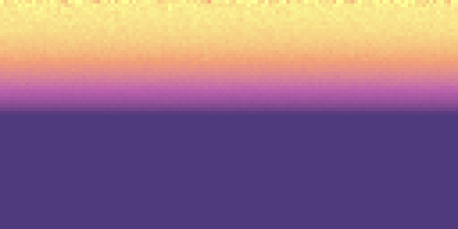
Rotated Lambertian PDF
Rotated Lambertian Sampled
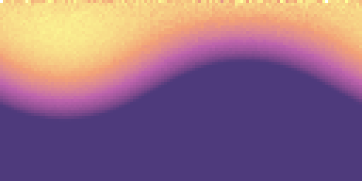
Phong PDF
Phong Sampled
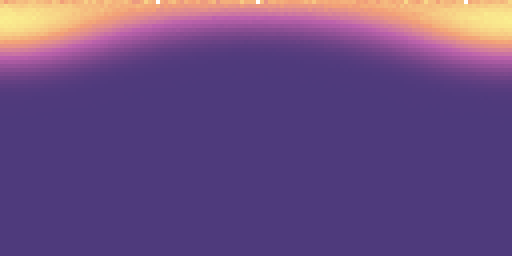
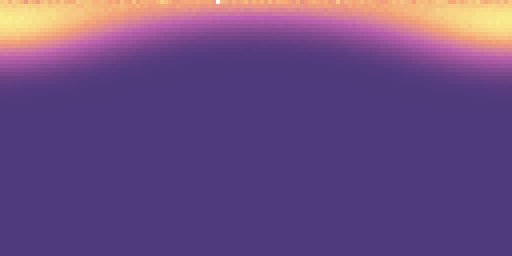
Rotated Phong PDF
Rotated Phong Sampled
Blinn-Phong PDF
Blinn-Phong Sampled
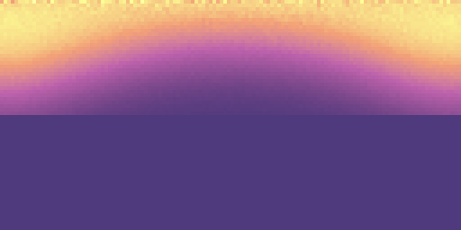
Rotated Blinn-Phong PDF
Rotated Blinn-Phong Sampled
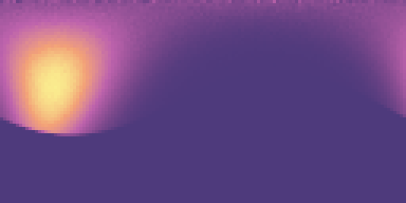
Beckmann PDF
Beckmann Sampled
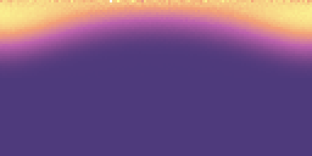
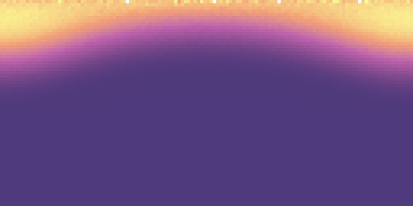
Rotated Beckmann PDF
Rotated Beckmann Sampled
(##) Task 3: Integrators
Normal Integrators
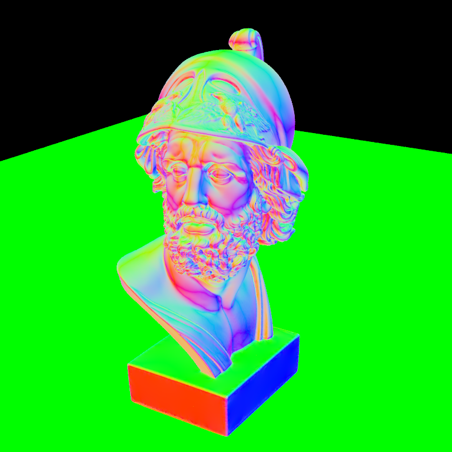
Ambient Occlusion Integrators
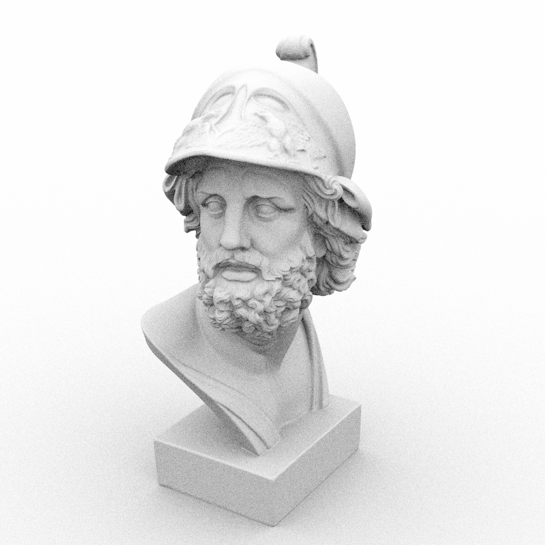
Phong Ball Scene
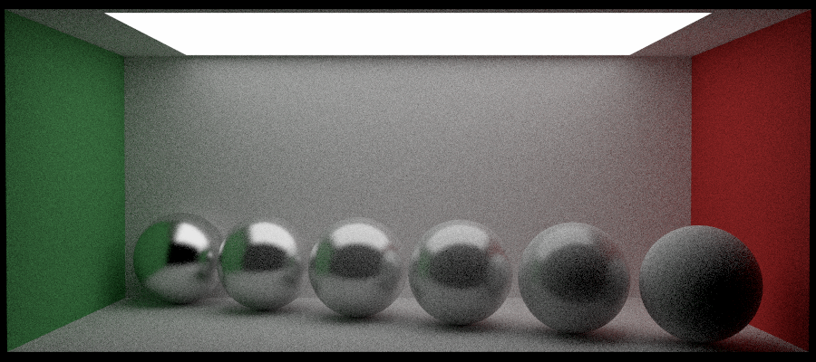
Blinn-Phong Ball Scene
Odyssey Scene
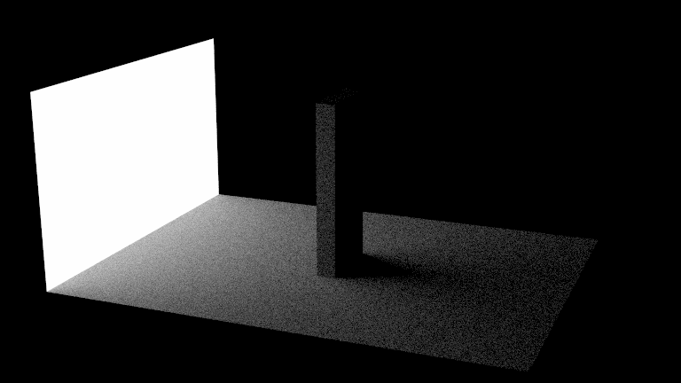
Veach Material Integrator Scene
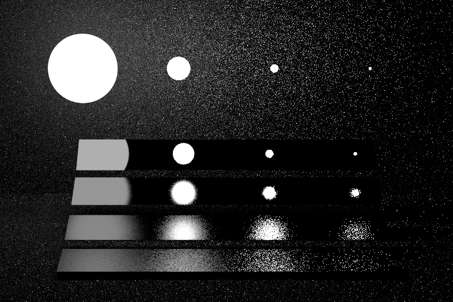
Beckmann Ball Scene
Oren-Nayar Ball Scene
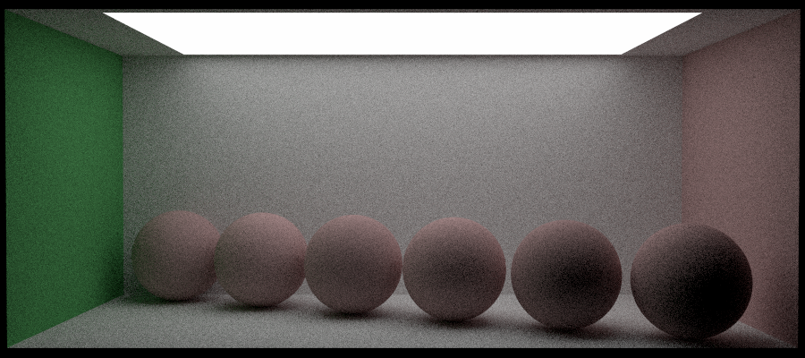
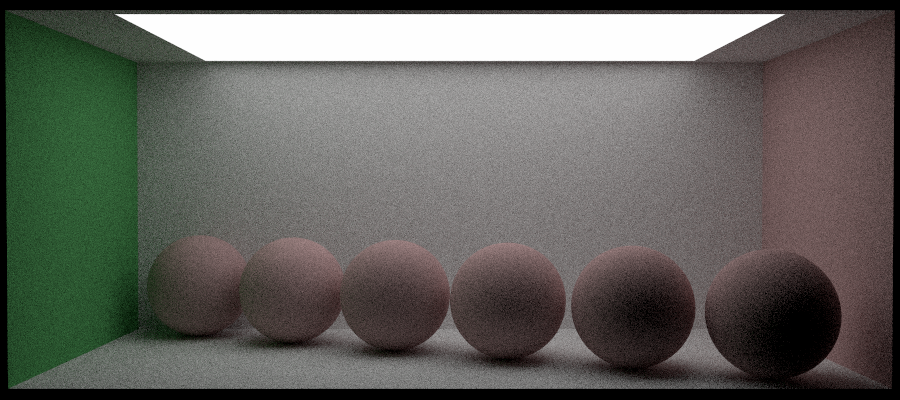
(##) Task 4: Improved and Quasi Monte Carlo Sampling
Stratified Sampler Checker Scene


 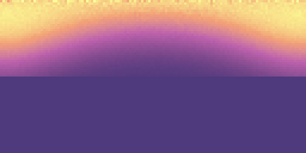
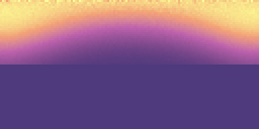

 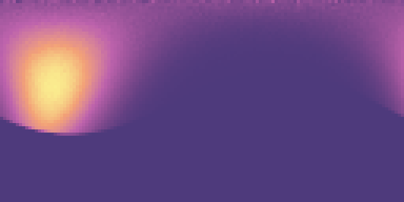
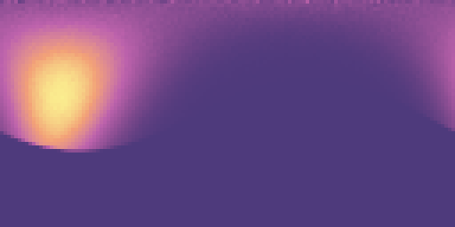

 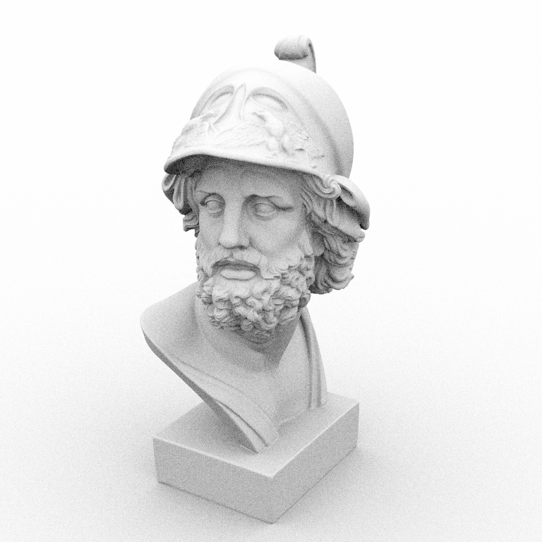
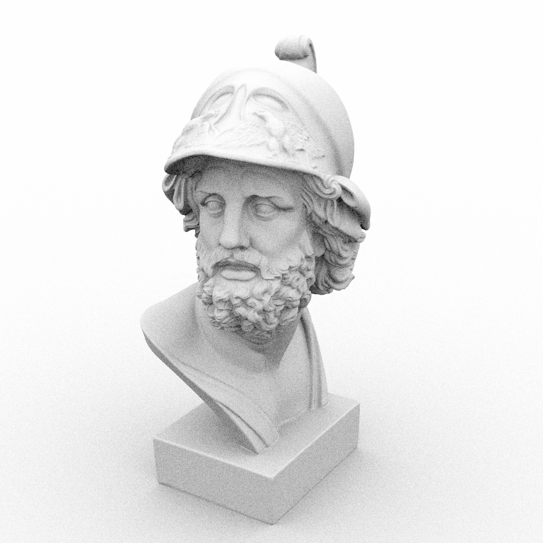